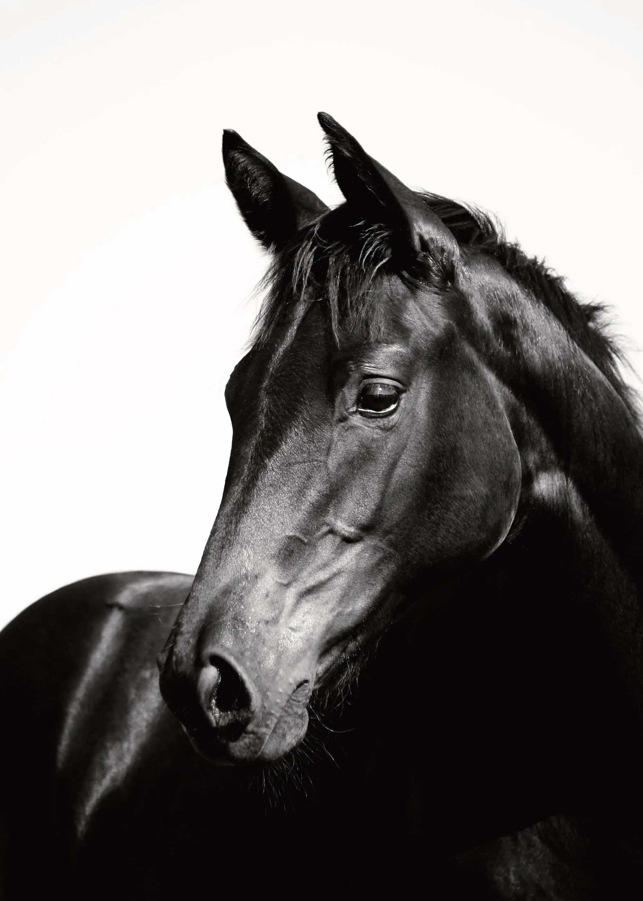
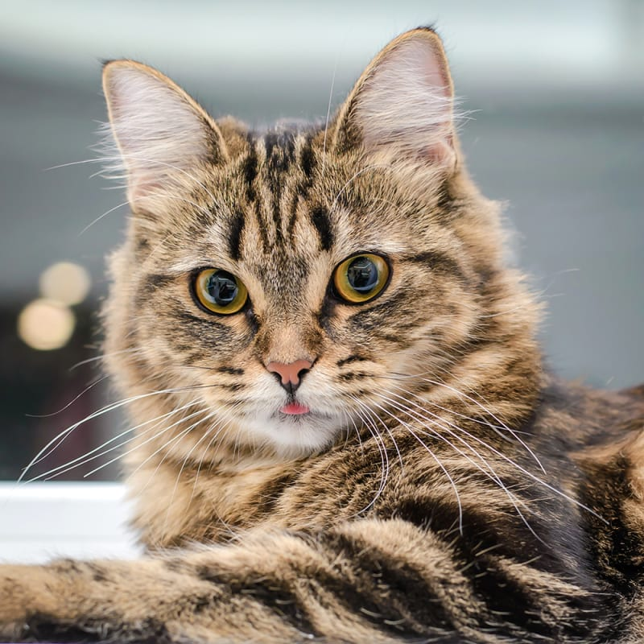

Du måste vara över 18 för att läsa våra kurser
- Webbdesign
- Webbutveckling
- Javascript
- Tillgänglighetsoptimering
Du måste vara över 18 för att läsa våra kurser
Hästar (Equus) är det enda nu levande släktet inom familjen hästdjur (Equidae). Hästar är medelstora däggdjur med avlångt huvud och förhållandevis lång hals med man. De har långa smala ben och står på en tå som skyddas av en hornartad hov. De har lång svans som antingen avslutas med en tofs eller som helt är täckt med böljande hår, så kallat tagel.

Hund (Canis lupus familiaris eller Canis lupus domesticus,[1] tidigare även Canis familiaris) är en domesticerad underart av varg (Canis lupus). Hundar finns av många olika raser, vilka framavlats av människan sedan hunden domesticerades.

Katt (felis catus) är ett relativt litet, smygjagande rovdjur i familjen kattdjur och ett vanligt sällskapsdjur i stora delar av världen. Falbkatten (felis silvestris lybica), en underart till vildkatten (felis silvestris), blev tidigt domesticerad av människan som nyttodjur för att hålla efter skadedjur eller för sällskap, både på landet och i stadsmiljö.
